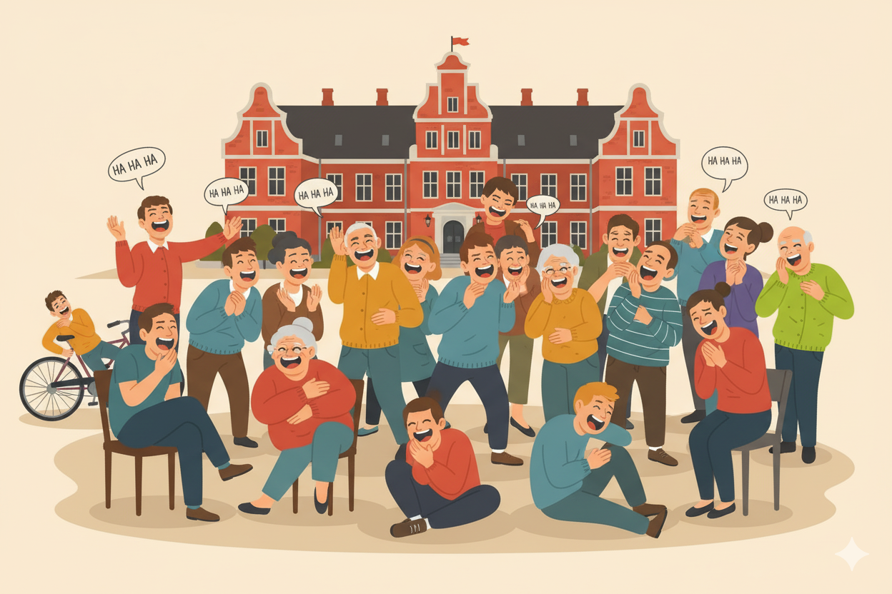
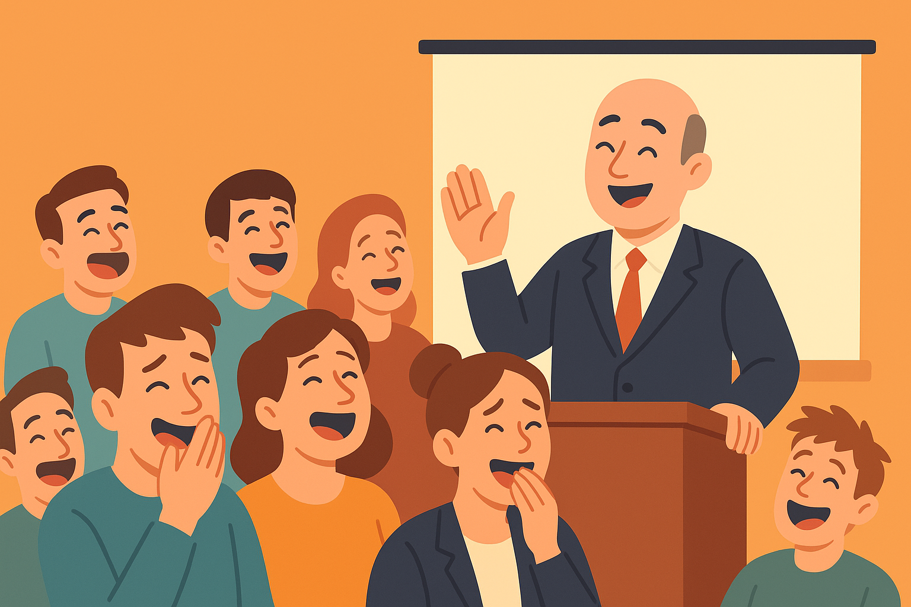
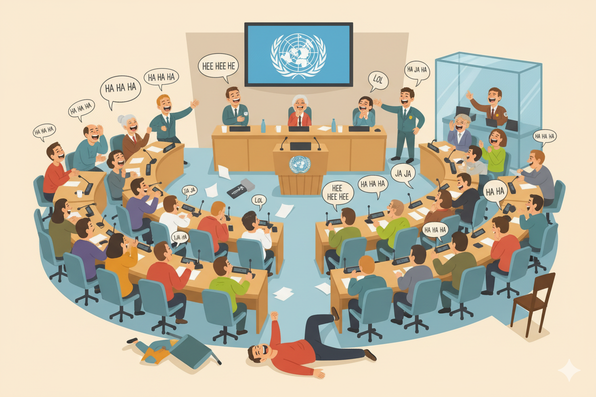

Nogle situationer er bare for alvorlige til at grine i… eller det tror vi i hvert fald. Men hvad gør man
egentlig, når
latteren bryder ud, selv når man burde være alvorlig?
På vores side kan du dele dine egne øjeblikke, hvor du griner midt i en seriøs situation, og se, hvordan
andre håndterer
de pinlige, sjove eller helt absurde øjeblikke.
Del dit eget øjeblik, hvor du grinede midt i alvoren – tryk her og opret din hændelse.
DANSKERE RAMT AF NATIONALT GRINEFÆNOMEN - “DET STARTER MED ET FNIS…”
Et uskyldigt grin har udviklet sig til et landsdækkende fænomen. Over hele Danmark kæmper folk for at holde
masken i de
mest seriøse situationer - men nervelatteren rammer, når man mindst venter det..

DANSKERE RAMT AF NATIONALT GRINEFÆNOMEN - “DET STARTER MED ET FNIS…”
København, onsdag — Der er udbrudt et mærkeligt, men højest genkendeligt fænomen i Danmark: folk kan
ganske enkelt ikke
lade være med at grine i de mest seriøse situationer.
Det starter som et lille fnis. En undertrykt lyd i halsen. Men før man ved af det, kæmper man for ikke at
sprutte midt i
en tavs forsamling - og så er det for sent.
“Jeg kunne mærke, det kom snigende…”
29-årige Sofie fra Odense fortæller, at det hele gik galt under hendes venindes bryllup:
“Præsten sagde noget helt normalt - men så lavede han en lille pause, og jeg ved ikke hvorfor, men min
hjerne
besluttede, at det var sjovt. Jeg prøvede at holde det inde, men så begyndte min næse at pive. Og så…
grinede jeg.
Højt.”
Flere lignende hændelser er rapporteret over hele landet - ved møder, eksamener, hospitalssamtaler og
endda under
konfirmationer.
Eksperter: “En nervøs forsvarsmekanisme”
Ifølge adfærdsforsker Dr. Karen Vestergaard fra Aarhus Universitet er der en logisk forklaring bag det
pinlige fænomen:
“Når vi står i en alvorlig situation, kan hjernen blive så overbelastet, at den vælger at reagere på den
mest upassende
måde. Latteren fungerer som et slags nødudløb - desværre bare på det værst tænkelige tidspunkt.”
Et voksende samfundsproblem
De sociale medier flyder nu over med videoer og bekendelser fra danskere, der har “kommet til” at grine,
mens de burde
have holdt masken. Nogle kalder det “grinekrise”, andre “latterangst” - men de fleste kan bare nikke
genkendende til
følelsen af at få klumpen i halsen, forsøge at holde den inde, og ende med et undertrykt prust, der lyder
som en defekt
støvsuger.
“Vi skal turde tale om det”
Flere psykologer opfordrer nu til, at vi begynder at tale mere åbent om nervelatter.
“Vi er et folkefærd, der tager os selv meget alvorligt,” siger Dr. Vestergaard. “Men nogle gange skal man
bare
acceptere, at kroppen reagerer - også når det ikke passer ind i stemningen.”
En uventet trøst
Selv om det kan føles som verdens ende at grine på det forkerte tidspunkt, peger forskerne på én positiv
ting: det
viser, at vi stadig har følelser - også når vi prøver at skjule dem.
Så næste gang du står midt i en alvorlig situation og mærker latteren bygge sig op, så husk: du er ikke
alene. Hele
Danmark kæmper lige nu med det samme.
LÆGEKONFERENCE AFBRUDT - EFTER MASSEUDBRUD AF LATTER
Et oplæg om stresshåndtering tog en uventet drejning, da salen eksploderede i ukontrolleret grin. Eksperter
kalder det
“kollektiv nervelatter” - vi kalder det ironisk timing.

LÆGEKONFERENCE AFBRUDT - EFTER MASSEUDBRUD AF LATTER
En ellers højtidelig lægekonference om stresshåndtering måtte i dag afbrydes, da flere deltagere pludselig
brød ud i
ukontrolleret latter midt under et oplæg om - ironisk nok - kontroltab.
Aarhus, torsdag morgen
Ifølge øjenvidner begyndte det hele med et enkelt fnis på bagerste række, som hurtigt spredte sig som en
bølge gennem
salen. Foredragsholderen, overlæge Henrik Madsen, forsøgte tappert at fortsætte, men da han sagde ordene “vi
skal tage
vores følelser alvorligt”, brød salen sammen.
“Det var som om nogen havde trykket på en knap,” fortæller en forvirret deltager. “Folk grinede, men ingen
vidste
hvorfor. Det var… smukt og frygteligt på samme tid.”
“Et klassisk eksempel på kollektiv nervelatter”
Adfærdsforsker Dr. Karen Vestergaard kalder hændelsen et “tekstbogseksempel” på nervelatter i flok.
“Når én person slipper kontrollen, spejler andre det ubevidst. Hjernen tror, situationen er sjov, selvom den
egentlig er
alvorlig. Det bliver en kædereaktion - og så er der ingen vej tilbage.”
Ifølge forskeren er netop konferencer, foredrag og ceremonier særligt udsatte:
“Jo mere alvor, jo større risiko for latter. Det er en form for social kortslutning.”
Uheldigt - men ufarligt
Arrangørerne understreger, at ingen kom til skade, men at flere måtte forlade lokalet for at få vejret.
“Det er svært
at tale om stresshåndtering, når 200 mennesker griner ukontrolleret,” udtaler en talsmand tørt.
En nation på kanten af grin
Episoden føjer sig til en række nylige hændelser, hvor danskere har mistet kontrollen over deres grin i
upassende
situationer. Psykologer advarer nu om, at presset for at være alvorlig hele tiden faktisk kan øge risikoen
for, at man
bryder sammen i grin.
“Jo mere du forsøger at holde masken, jo mere skriger din krop efter at bryde ud,” siger Dr. Vestergaard.
“Det er lidt
som at prøve at holde et nys inde - før eller siden eksploderer det.”
Hvad lærte vi?
Konferencen blev senere genoptaget, men arrangørerne indrømmer, at stemningen aldrig helt kom tilbage.
“Det er svært at tale om følelsesmæssig kontrol, når halvdelen af salen stadig ryster af grin,” siger en
deltager.
Danmark står nu over for et nyt spørgsmål: Hvordan bevarer man roen i alvoren - når kroppen bare vil grine?
BREAKING NEWS: VERDEN I LATTER - FN-MØDE BRYDER SAMMEN EFTER UVENTET GRINEANFALD
Et topmøde i FN tog en uventet drejning, da verdens ledere brød ud i ukontrolleret grin midt under en
alvorlig debat. En
enkelt tolk mistede grebet, og få sekunder senere lo hele salen. Eksperter kalder det “global nervelatter” -
vi kalder
det et historisk øjeblik af ufrivillig menneskelighed.

VERDEN I LATTER - FN-MØDE BRYDER SAMMEN EFTER UVENTET GRINEANFALD
Et ellers alvorligt topmøde i FN udviklede sig i går til en situation, ingen kunne have forudset. Midt i en
tung debat
om global krisestyring gik det pludselig galt - eller måske rettere sagt: sjovt.
New York, tirsdag morgen
Ifølge flere øjenvidner begyndte det hele med et forsigtigt fnis fra en tolk, der efter sigende kæmpede med
at oversætte
en alt for alvorlig sætning. Det lille grin startede som en næsten uhørlig lyd - men som en lavine af
nervøsitet spredte
det sig i rækkerne, og på få sekunder sad nogle af verdens mest magtfulde mennesker og kæmpede for ikke at
bryde sammen
af grin.
“Det lød som en hoste - men vi vidste alle, hvad det var”
En anonym diplomat fortæller, at øjeblikket var umuligt at stoppe:
“Først troede jeg, det var en hoste. Men så begyndte flere at fnise. Selv generalsekretæren sad og kæmpede
med et smil.
Da en repræsentant sagde ‘ha-ha’ i stedet for ‘her-her’, var det slut. Hele salen eksploderede.”
Sikkerhedsvagter forsøgte uden held at dæmpe stemningen, men endte selv med at trække på smilebåndet. En
journalist på
stedet beskrev scenen som “et kollektivt sammenbrud af diplomatisk selvkontrol”.
Eksperter kalder det “global nervelatter”
Adfærdsforskere har hurtigt reageret på hændelsen og betegner episoden som global nervelatter - et sjældent
fænomen,
hvor mennesker i pressede situationer ubevidst spejler hinandens følelser.
“Når man sidder i et rum fyldt med spænding og forventning, kan det mindste fnis få hele systemet til at
kollapse,”
forklarer den franske forsker Dr. Elise Moreau. “Hjernen opfatter latteren som et socialt signal – og så
slipper
kontrollen. Det er menneskets ældste form for emotionel smitte.”
Mødet måtte afbrydes
Ifølge FN's presseafdeling blev mødet midlertidigt afbrudt i 45 minutter, da flere delegationer havde svært
ved at
genvinde roen.
“Vi har oplevet protester, tekniske fejl og afbrydelser før,” udtalte en talsmand, “men det her var første
gang, nogen
måtte forlade salen, fordi de grinede for meget.”
Da mødet endelig blev genoptaget, var stemningen ifølge flere deltagere væsentligt mere afslappet.
“Pludselig talte folk
sammen på kryds og tværs. Der blev grinet, men også lyttet. Det var som om, verden lige havde trukket vejret
for første
gang,” siger en repræsentant fra Brasilien.